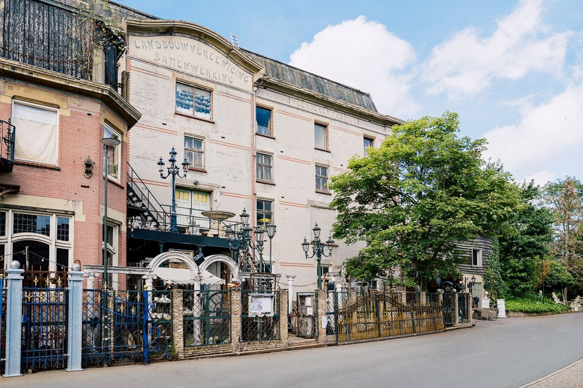
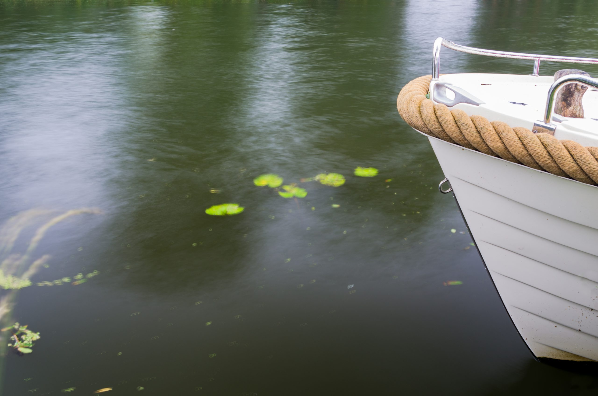

Attracties in Giessenburg

De Graanbuurt
Welkom in de Graanbuurt!
De historische panden, die de Graanbuurt vormen, zitten vol met unieke winkels.
Iedere winkel heeft zijn eigen specialiteit. Van banket, sieraden, bloemen en kleding tot cadeau
artikelen, meubelen, horeca en een kapsalon.
Authentiek winkelen in een nieuw jasje gestoken!

Sloepverhuur Giessenburg
Sloep varen op de Giessen
Toe aan een heerlijke dag ontspannen?
De Giessen heeft een prachtig vaargebied, waar u kunt genieten en tot rust komt door de mooie
omgeving en natuur.
Tevens bieden wij de nieuwste en meest comfortabele sloepen!